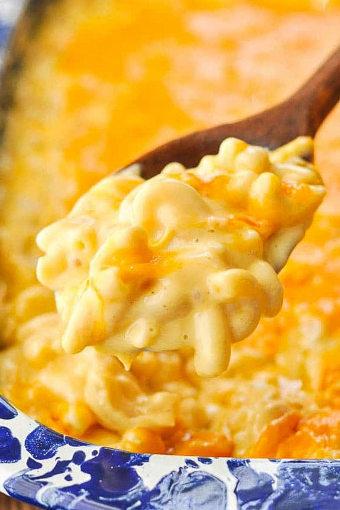

Savory Mac n' Cheese

Description
Mac n' Cheese is my ultimate comfort food. In fact, it's the first meal I remember being able to make by myself when I was a kid. Let's check out my favorite way of throwing this classic dish together.
Ingredients
- 1 (8 ounce) box elbow macaroni
- ¼ cup butter
- ¼ cup all-purpose flour
- ½ teaspoon salt
- ground black pepper to taste
- 2 cups milk
- 2 cups shredded Cheddar cheese
Steps
- Bring a large pot of lightly salted water to a boil. Cook the elbow macaroni in the boiling water, stirring occasionally until cooked through but firm, 8 minutes.
- At the same time, melt butter in a saucepan over medium heat.
- Add flour, salt, and pepper and stir until smooth, about 5 minutes.
- Pour in milk slowly, while stirring continuously. Keep cooking and stirring until mixture is smooth and bubbling, roughly 5 minutes, making sure the milk doesn't burn.
- Add Cheddar cheese and stir until melted, 2 to 4 minutes.
- Drain macaroni and fold into cheese sauce until coated.